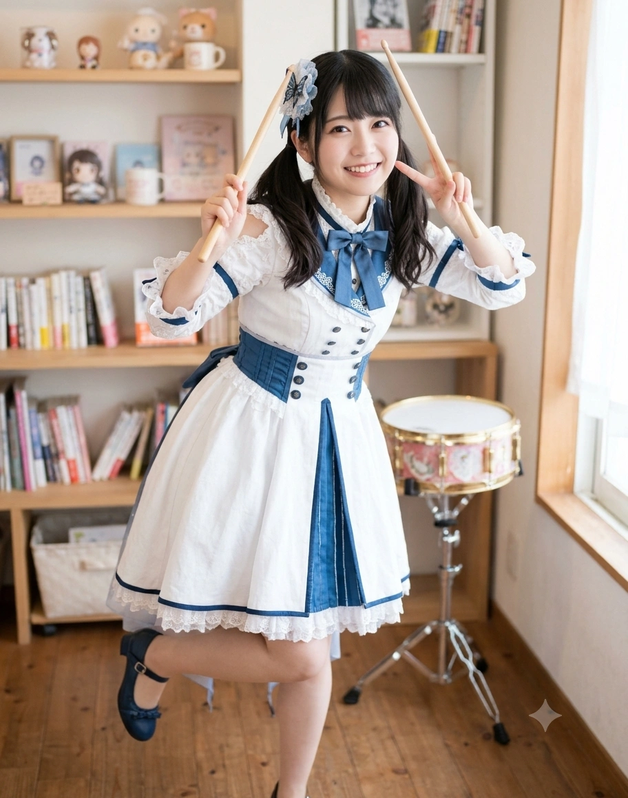

1. 개요
"이런 때야말로 반장(위원장) 출신 본부장인 이주시가 나설 때야! 내가 Morfonica의 리더이자 『쌍엽푸드』 신사업본부장이니까, 곤란한 일이 있으면 뭐든지 상담해 줄게! 흐흥~♪"
"므므므... 스틱을 이렇게 멋지게 돌려서... 어, 어라!? 또 떨어뜨려 버렸어!! 그, 그리고 기유호 너어어!! 자꾸 나보고 '후스케'라느니 '햄스터'라느니 놀리지 마!! 나도 대학 졸업하고 블랙커피 마시는 어엿한 성인 직장인이란 말이야!!"
효빈광역시 창전구의 인구를 멱살 잡고 견인하는 대규모 신도시 쌍엽동(双葉洞 / 쌍엽지구)이 낳은 자치 리더이자, 호남·덕빈권 최대 급식·외식 프랜차이즈 재벌인 『(주)쌍엽푸드 시스템(풀무원·CJ푸드빌 포지션)』 이창훈 회장의 장녀. 동시에 5인조 심포닉 걸즈 록 밴드 『모르포니카(Morfonica 효빈)』의 공식 리더 겸 드러머이다. 2003년생 여성으로 효빈대학교 생활과학대학 식품영양학과(22학번)에서 4년 내내 과대표를 역임하며 2026년 2월 수석으로 학사 졸업하고 영양사 국가면허를 취득했으며, 현재는 가업인 『(주)쌍엽푸드 시스템』의 정식 신사업본부장(R&D 상무이사 겸 수석 영양사)으로 재직하는 한편 주말에는 현장 감각을 유지하기 위해 우택동 『하규미(하자와) 커피점』 주말 명예 점장(치프 바리스타)으로도 일하고 있다.
이름의 성씨인 '이(二)'는 《BanG Dream!》 Morfonica의 리더 후타바 츠쿠시(二葉 つくし)의 성씨 첫 글자 그대로이며, 그녀가 태어나고 자란 고향 쌍엽동(双葉洞)의 '쌍엽(두 개의 잎사귀)'을 일본어로 읽으면 정확히 '후타바(ふたば)'가 된다! 생년월일 또한 애니메이션 설정상 츠쿠시와 100% 일치하는 2003년 9월 15일생(처녀자리)이다.
등까지 내려오는 보랏빛 흑발 곱슬머리 트윈테일에 커다란 다홍색 눈동자, 150cm의 조그맣고 여리여리한 요정 같은 체구를 지녔다. 무언가를 고뇌할 때는 "므므므..."라고 끙끙대고, 의기양양할 때는 코를 찡긋하며 "흐흥~"이라고 거드름을 피우다가 드럼 스틱을 떨어뜨리는 허당끼까지 후타바 츠쿠시의 완벽한 실사판이다. 그러나 겉보기엔 귀여운 허당 같아도, 개성 강하고 수동적인 멤버들(마서령, 조류희, 심나나)과 폭주기관차(기유호) 사이에서 흔들리지 않는 책임감으로 밴드의 중심을 꽉 잡아주는 진정한 외유내강형 명품 리더다.
2. 생애 및 커리어 (쌍엽지구의 리더 겸 외식 재벌 장녀)
2.1. 쌍엽(双葉)동의 급식·외식 재벌 『쌍엽푸드』 장녀와 만년 반장 본능
2003년 9월 15일, 효빈광역시 창전구 쌍엽동에서 종합식품기업 『(주)쌍엽푸드 시스템』을 창업한 이창훈 회장과 요리연구가 정미숙 여사의 3녀 중 장녀(맏딸)로 태어났다. 기유호(동곡동 토에크 패션 그룹 딸), 조류희(팔조동 로펌·금융가 딸)와 함께 '창전구 3대 쌉부자'의 일원이다.
유치원 시절까지만 해도 주변 친구들과 다 비슷비슷해서 딱히 특별해지고 싶다는 생각이 없었으나, 쌍엽초등학교와 쌍엽중학교에 진학해 주변의 부촌 친구들이 하나씩 뛰어난 특기를 갖춰 나가는 모습을 보며 속으로 '나는 재능이 부족한데 어떡하지...'라는 낮은 자존감과 위축감을 느꼈다. 하지만 이를 회피하는 대신 "재능이 부족하면 누구보다 앞장서서 노력하는 반장(위원장)이 되어 스스로를 바꾸자!"라고 결심한 주시는, 초등학교 1학년부터 고등학교 3학년까지 12년 개근 학급 반장(대학에 가서도 4년 내내 과대표)을 도맡으며 "이런 때야말로 반장이 나설 때야!"라는 구호를 인생의 모토로 삼게 되었다.
재벌가 집안이지만 미디어에 나오는 딱딱하고 차가운 재벌 드라마 분위기는 전혀 없는 화목하고 유쾌한 가정에서 자랐다. 고등학교 시절 학교 측이 앞길 교통체증을 이유로 기사 딸린 리무진(자가용) 등교를 금지하자, 주시가 학생회 건의함에 진지하게 "교통이 막히면 우리 아빠 회사 중장비 불러서 학교 옆 공터에 지하 3층짜리 대형 주차장을 만들면 다 해결되는 거 아니야?"라는 초특급 재벌가식 해결책을 투서해 교장 선생님을 벙찌게 만든 일화는 전설로 남아있다.
2.2. "서 있는 건 다리 아프니까 앉아서 치는 드럼을 할래!" & 체형교정 마스터
이주시가 밴드 악기 중 하필 체력 소모가 극심한 '드럼'을 선택하게 된 입문 계기는, 담당 성우이자 프로 드러머인 mika의 실제 입문 비화와 100% 똑같다!
중학교 3학년(만 15~16세) 시절, 우연히 록 밴드 공연 영상을 보던 주시는 "므므므... 보컬이랑 기타, 베이스는 내내 서서 움직여야 해서 다리가 아플 것 같은데, 드럼은 유일하게 의자에 앉아서 연주할 수 있잖아?! 앉을 수 있으니까 드럼을 해야겠어!"라는 지극히 단순한 이유로 쌍엽역 앞 드럼 학원 문을 두드렸다.[6]그러나 막상 들어가 보니 그 학원과 인근 라이브하우스의 선배 강사들이 하나같이 호랑이처럼 무서운 정통파 드러머들이어서, 주시는 살기 위해(?) 피나는 스틱 컨트롤을 연마한 끝에 전국 학생 드럼 콩쿠르를 휩쓰는 괴물 드러머로 각성하게 되었다.
[성우 mika 본체 스펙 완벽 계승: 드럼 강사급 실력과 정체(整体) 세라피스트 자격!]
더욱 놀라운 사실은, 주시가 방학 때마다 일본 도쿄의 실용음악 명문 ESP 뮤지컬 아카데미(ESP Entertainment Tokyo) 단기 유학 코스를 수료하며 실제 후타바 츠쿠시의 성우 겸 드러머인 mika 강사에게 직접 사사받았고, 그 과정에서 『일본 정체 세라피스트 협회(日本整体セラピスト協会) 수료 인정증』 및 체형교정 스포츠마사지 자격증까지 함께 취득했다는 점이다! 덕분에 150cm의 작은 체구에도 불구하고 인체의 골격 구조와 무게중심을 완벽하게 활용한 Canopus YAIBA II GROOVE 드럼 세트(랙 탐을 왼쪽 별도 지지대에 둔 비대칭 세팅) 연주법을 구사하여, 라이브 때마다 흔들림 없는 정확한 메트로놈 박자와 파워풀한 타점을 자랑한다.
2.3. 창전구 소재 평준화 명문 『월삼여고』 진학과 마서령 구출 작전: 『모르포니카』의 시작
쌍엽중학교를 졸업한 주시는 효빈광역시 창전구 내에 위치한 명문 사립 여고인 월삼여자고등학교(月森女子高等學校 / 츠키노모리 여학원 포지션)에 진학해 1학년 A반 반장이 되었다.
[지리 및 학군 고증 주의: 빈주시 장기구 월삼동(月三洞)과는 전혀 다른 곳에 위치한 창전구 명문 여고!]
간혹 타 지역 사람들이 '월삼여자고등학교'라는 교명만 보고 덕빈북도 빈주시 장기구에 있는 '월삼동(月三洞)'에 위치한 학교이거나 옆 동네 학교라고 착각하곤 하지만, 실제로 빈주시 장기구 월삼동과 효빈광역시 남동부 창전구는 물리적 거리가 상당히 먼 전혀 다른 권역이다! 주시와 멤버들이 다닌 『월삼여자고등학교(月森女高)』는 옛 학원 창립자가 '달빛 비치는 푸른 숲(月森, 츠키노모리)'이라는 아호에서 따와 지은 교명으로, 빈주시 월삼동(月三洞)과는 한글 표기만 우연히 같을 뿐 지리적으로는 100% 효빈시 창전구 학군 내에 자리 잡고 있다. 또한 특목고나 자사고가 아닌 창전구 학군 소속 '고교 평준화 일반계 고등학교'였기 때문에, 쌍엽포레스트 대저택에 사는 외식 재벌 장녀 이주시와 칠심3동 다세대 빌라에 살던 저소득층 소녀 마서령·심나나가 같은 교실에서 운명처럼 만날 수 있었다.
주시는 학기 초부터 교실 구석에서 혼자 한숨을 쉬며 겉돌고 있던 같은 반 학우 마서령(쿠라타 마시로 본체)을 유심히 지켜보았다. 서령이가 부촌 학교 분위기에 기가 죽어 우울해하자, 반장으로서 사명감이 폭발한 주시는 "마서령 양! 이번 주말에 나랑 같이 엄청 반짝이는 곳(『RiNG 효빈점』 5밴드 합동 라이브)에 가자!"라며 서령이의 손을 잡고 반강제로 공연장으로 이끌었다.
그곳에서 옆 반의 인싸 기유호(토우코)를 만나 세 사람이 의기투합한 것이 바로 『모르포니카』 탄생의 결정적 순간이었다. 이후 주시는 가위바위보 구경을 하던 심나나(나나미)와 전교 1등 바이올리니스트 조류희(루이)까지 영입하고, 학급 반장에 이어 밴드 리더 자리까지 꿰찼다("학급위원장 겸 밴드 리더, 즉 리더 겸 리더!").
2.4. 효빈대 식품영양학과 졸업 및 『(주)쌍엽푸드 시스템』 신사업본부장(R&D 상무) 취임과 『하규미 커피점』 주말 명예 점장
원작에서도 루이, 나나미와 함께 모르포니카 내 브레인(상위권 우등생)으로 묘사되듯, 이주시 역시 성실한 수업 태도와 똑 부러지는 두뇌로 월삼여고 내신 최상위권을 유지했다. 그리고 아버지의 외식·급식 기업 『쌍엽푸드』를 더욱 건강하고 완벽한 글로벌 식문화 기업으로 발전시키겠다는 꿈을 품고 효빈대학교 생활과학대학 식품영양학과(22학번)에 수석으로 입학했다.
학부 재학 시절 내내 "진정한 외식 경영자가 되려면 아버지 회사 빽 없이 밑바닥 카페 현장 실무부터 직접 경험해 봐야 해!"라는 기특한 생각으로(『걸즈·비·앰비셔스!』 이벤트 고증), 청엽구 우택동 남우택역 카페거리의 명물인 대선배 하규미(하자와 츠구미 본체, 92년생)네 가족이 운영하는 『하규미(하자와) 커피점』에서 주말 아르바이트생으로 열일하며 현장 감각을 익혔다.
2003년생 여성으로서 휴학 없이 4년간 학과 과대표와 카페 알바, 밴드 리더를 완벽하게 병행한 주시는, 2026년 1월 영양사 및 위생사 국가면허 시험에 전국 수석권으로 합격하고 2026년 2월 효빈대학교 식품영양학과를 최우등 졸업했다! 졸업 직후인 2026년 3월부터는 모기업인 『(주)쌍엽푸드 시스템』의 정식 신사업본부장(R&D 상무이사 겸 수석 영양사)으로 정식 취임하여 호남·덕빈권 학교 급식 메뉴 리뉴얼과 친환경 케이터링 사업을 진두지휘하고 있다. 특히 효빈대학교 부설 종합사회복지관 사회복지사로 취업한 단짝 마서령이 담당하는 결식 우려 위기청소년 및 지역아동센터 아이들에게 매주 최고급 수제 카레와 문어 비엔나 도시락을 법정 지정기부금 형태로 후원하고 있으며, 본부장 임원이 된 현재도 초심을 잃지 않겠다며 주말마다 우택동 『하규미 커피점』의 주말 명예 점장(치프 바리스타)으로 앞치마를 두르고 나가 단골손님들에게 커피를 내려주고 있다.
3. 비주얼 및 캐릭터성 (150cm 쪼꼬미 반장님과 허스키 보이스 반전)
3.1. 조류희(169cm)의 초등학생 여동생으로 오해받는 150cm·B75(AA컵)의 비애
보랏빛이 감도는 윤기 흐르는 흑발 곱슬머리를 양갈래 트윈테일로 단정하게 묶고 있으며(취미가 '헤어 어레인지'라 멤버들의 머리도 예쁘게 땋아준다), 치켜올라간 커다란 다홍색 눈동자가 마치 소동물을 연상케 하는 최강의 귀염상 미소녀다.
그러나 본인에게 가장 치명적인 역린이자 평생의 한(恨)이 있으니, 바로 만 23세 대졸 성인 직장인(본부장님!)이 되었음에도 신장이 150cm(실제 성우 mika의 키 147cm 반영)에서 1mm도 더 자라지 않아 모르포니카 내 최단신이자 효빈시 밴드 판 전체 최단신(우서림과 공동 1위)에 머물러 있다는 점이다! 게다가 쓰리사이즈 역시 B75(AA~A컵)-W54-H77로, 은근한 베이글인 마서령(158cm, C컵)에게조차 체격으로 밀린다.
이 때문에 169cm의 장신에 재벌 사모님 포스를 풍기는 동갑내기 친구 조류희(야시오 루이 본체)와 둘이서 패스트푸드점이나 백화점에 가면, 무려 19cm의 키 차이 때문에 점원이 주시를 류희의 늦둥이 초등학생 여동생(혹은 딸...)으로 착각해 "어머, 동생분에게는 어린이용 해피 세트를 추천합니다~"라고 안내하는 대참사가 매주 벌어진다! 또한 학부 시절 대학 연극부에서 합동 공연 배역 의뢰가 들어왔을 때 조류희는 '백설공주(또는 왕비)' 역을 받은 반면 이주시는 '일곱 난쟁이 대장' 역을 배정받아 주시가 "므므므... 날 어린애 취급하지 마아아!!"라며 대폭발한 웃픈 일화도 있다.
3.2. "므므므...", "흐흥~" 말버릇과 푸드트럭 호출기 금수저
[아담한 체구에서 뿜어져 나오는 매력적인 허스키 중저음 보이스!]
외모만 보면 설탕을 굴린 듯한 하이톤 로리 보이스가 나올 것 같지만, 입을 열면 담당 성우 mika 특유의 허스키하고 중성적인 걸크러쉬 중저음 목소리가 튀어나온다! 처음 주시를 본 사람들은 이 의외의 허스키 보이스에 깜짝 놀라지만, 듣다 보면 오히려 똑 부러지는 반장·본부장 캐릭터성과 기묘한 중독성을 자아내어 팬들 사이에서는 '극호감 마약 보이스'로 통한다.
어머니가 직접 끓여주시는 '엄마표 수제 카레'를 세상에서 제일 좋아하며, 어른스러워 보이기 위해 눈물을 머금고 쓴 '블랙커피'를 마시며 "흐흥, 어른의 맛이지?"라고 허세를 부린다. 반면 마서령과 똑같이 시금치, 피망 같은 녹색 채소는 극도로 싫어해서 급식 재벌 본부장임에도 채소 반찬 앞에서는 동공이 흔들린다. 또한 집안에서 기르는 관엽식물(몬스테라, 고무나무 등)을 매우 아껴 겨울이면 추울까 봐 거실 안으로 일일이 들여놓는 다정한 성격이다.
4. 정치 성향: 『쌍엽 가디언즈』 총대장과 반(反)국힘 리더십
4.1. "불법 주차에 불량 급식 공약?! 리더인 내가 용서 못 해!!"
"눈이 내리면 미끄러우니까 밀기 금지, 뛰기 금지, 그리고 우리 쌍엽동 어린이 보호구역에 선거 유세차 불법 주차하는 건 절대 금지야!! 어라? 거기 국민의힘 윤재훈 후보님?! 방금 초등학교 친환경 급식 단가를 깎아서 버스 회사 보조금으로 쓰겠다고 하셨어요?! 수석 영양사이자 쌍엽 가디언즈 리더인 제가 당장 퇴장 명령을 내리겠습니다!!"
이주시는 단짝 마서령, 심나나, 기유호와 함께 더불어민주당 당원으로서 창전구 청년 정치를 이끄는 핵심 리더다. 그녀의 고향인 창전구 쌍엽동(双葉洞)은 과거 탄성군 시절 인구가 적어 유류동·팔조동에 얹혀살며 '유엽동'이라 불리던 서러움을 딛고, 신도시 개발을 통해 창전구 인구를 캐리하는 대장 동네로 우뚝 선 곳이다. 이 역사 덕분에 쌍엽동 주민들은 자율방범·자치 조직인 『쌍엽 가디언즈』를 결성해 불법 주차와 쓰레기 투기를 직접 단속할 만큼 자치 의식과 민주당 지지세가 하늘을 찌른다.
특히 2024년 총선과 2026년 지선 당시, 국민의힘 윤재훈 후보 일당이 쌍엽초등학교 앞 스쿨존 황색 실선에 대형 유세트럭을 불법 주차해 아이들의 통학로를 막고, 심지어 "무상급식은 좌파 포퓰리즘이다! 내가 당선되면 급식 예산을 삭감하겠다!"는 망언을 내뱉자, 학교 급식 납품 기업 회장의 딸이자 영양사인 이주시의 눈이 뒤집혔다!
주시는 즉시 형광 조끼를 입은 『쌍엽 가디언즈』 아주머니·아저씨 대원 100명을 소집해 호루라기를 불며 유세차를 포위했고, 스마트폰 안전신문고 앱으로 1분 간격 연속 촬영 신고를 넣는 동시에 아버지 회사(쌍엽푸드)의 5톤 냉동 탑차 4대를 합법적 주정차 구역에 배치해 윤재훈 유세차의 시야를 완벽하게 가려버리는 '리더십 참교육'을 시전해 쌍엽동에서 보수 후보를 영구 추방해 버렸다.
4.2. 소속 정당
| 기간 | 정당명 | 비고 |
| 2022~현재 | 더불어민주당 | 창전구 쌍엽동 청년자치위원장 겸 식생활안전특위 부위원장 |
5. 효빈시판 Morfonica 멤버들과의 관계 및 4대 일화
5.1. 멤버별 상세 관계
- 심나나 (深羅奈 / 히로마치 나나미 포지션, 2003년생) - "드럼과 베이스는 부부 사이~"라며 날 당황시키는 능글맞은 파트너:
밴드의 리듬대를 함께 책임지는 베이시스트이자 『(주)토에크』 수석 콜라보 아트 디렉터 겸 효빈경제연구원 애널리스트(통칭 나나츠쿠). 나나는 주시를 "츠-쨩(또는 주시 쨩)"이라 부르며, 주시가 리더로서 동분서주할 때마다 옆에서 "후후~ 드럼과 베이스는 원래 부부 사이라잖아~ 츠-쨩의 아내 역할은 심 씨에게 맡겨줘~♪"라며 능글맞게 챙겨준다. 한 번은 나나가 주시네 세 자매(주시, 청이, 향리)가 나란히 찍은 사진을 보고 "와아~ 세 쌍둥이야? 누가 츠-쨩인지 전혀 모르겠네~"라고 말해 언니로서 위엄을 지키려던 주시를 좌절하게 만들었다.
- 마서령 (馬瑞領 / 쿠라타 마시로 포지션, 2003년생) - 내가 밴드의 세계로 손잡고 이끌어낸 소중한 1학년 A반 짝꿍(현 효빈대 사회복지관 사회복지사):
창전구 월삼여고 1학년 A반에서 만나 주시가 가장 먼저 손을 내밀어 준 단짝 친구(통칭 마시츠쿠). 두 사람 모두 녹색 채소를 극도로 싫어한다는 귀여운 공통점이 있다. 서령이가 초기 라이브 실패 후 주시에게 "주시 쨩이 멋대로 라이브 잡아서 그렇잖아!"라고 남탓을 했을 때도, 주시는 서령이를 미워하기는커녕 "리더인 내가 서령 쨩의 마음을 더 세심하게 살피지 못했어"라며 반성하고 끝까지 서령이를 기다려준 참된 리더다. 2026년 서령이가 효빈대 부설 종합사회복지관 사회복지사 겸 사례관리상담사가 된 후에는 쌍엽푸드의 사회공헌 예산을 서령이의 복지관에 최우선으로 배정해 주고 있다.
- 조류희 (潮瑠希 / 야시오 루이 포지션, 2003년생) - 어른스러운 스타일과 169cm 키가 너무나도 부러운 나의 동경 대상:
주시가 매일 "므므므... 어떻게 해야 류희(루이) 씨 같은 성숙한 어른 스타일이 될 수 있을까... 정말 나랑 동갑(03년생) 맞는 거지?!"라며 선망하는 대상(통칭 루이츠쿠). 기유호와 류희가 대판 싸웠을 때 주시가 침착하게 류희를 설득해 갈등을 봉합하는 등, 차가운 류희도 주시의 성실한 리더십만큼은 진심으로 존중하고 따른다. (단, 주시의 막내 여동생 이향리가 언니 주시보다 어른스러운 류희 언니를 더 잘 따라서 주시가 삐지곤 한다.)
- 기유호 (奇裕昊 / 키리가야 토우코 포지션, 2003년생) - 날 '후스케'라고 부르며 햄스터 취급하는 얄미운 장신 단짝이자 토우코 도플갱어:
한국의 정통 희귀 성씨인 '기(奇)' 씨에 '넉넉할 유(裕)', '하늘 호(昊)' 자를 쓰는 기유호(奇裕昊)로, 이름의 어감('기유호' ↔ '키리가야 토우코')과 출생지·거주지인 창전구 동곡동(桐谷洞)·투자동(透子洞)의 지명 한자(桐谷 透子), 그리고 화려한 164cm 금발 웨이브 갸루 외모와 대인배 인싸 성격 덕분에 키리가야 토우코의 완벽한 현실 도플갱어로 불리는 『TOEK-U』 대표이사 사장님(통칭 토우츠쿠).
주시를 "후-스케(ふーすけ)"라는 정체불명의 별명으로 부르며 틈만 나면 놀려먹는 천적이다. 할로윈 때 주시가 "과자 줄 테니까 장난은 절대 금지야! 리더와의 약속!"이라고 신신당부했음에도 유호가 과자만 챙겨 먹고 장난을 쳐서 주시가 매번 뒷목을 잡는다. 하지만 유호가 기타 특훈을 할 때 주시가 매일 새벽 6시에 같이 나가 드럼으로 박자를 맞춰준 든든한 우정을 자랑한다.
5.2. 효빈시판 모르포니카 5인방 핵심 일화 (각 30줄 이상 4대 사건)
- 모니카 일화 1: 쌍엽포레스트 대저택 크리스마스 파티와 '붕어빵 여동생(이청이·이향리)' 출격 대소동! (feat. 마서령, 조류희, 심나나)
크리스마스이브 날, 이주시는 창전구 쌍엽1동에 위치한 자신의 본가 대저택에 모르포니카 멤버 전원을 초대해 성대한 크리스마스 파티를 열었다(원작 『거룩한 밤에 빛나는 아리아』 이벤트 고증). 아버지 이창훈 회장이 직접 특대형 칠면조 구이와 쌍엽푸드 특제 비프 스튜를 차려주어 화기애애한 분위기가 이어지던 중, 2층 계단에서 주시와 머리 스타일(보랏빛 흑발 곱슬머리)부터 다홍색 눈동자, 심지어 150cm 언저리의 아담한 키까지 데칼코마니처럼 똑같이 생긴 두 소녀가 내려왔다!
바로 주시가 평소 "언니니까 집의 코타츠도 동생들에게 양보하고, 발렌타인데이엔 동생들 양치질 체크도 꼼꼼히 해준다구!"라며 자랑하던 여동생들인 둘째 이청이(아오이 포지션, 중3)와 막내 이향리(카오리 포지션, 초6)였다!
심나나: (세 자매를 번갈아 보며 실눈을 비비고) "어라라~? 시로 쨩, 큰일 났어! 츠-쨩이 분신술을 써서 세 명으로 늘어났어! 누가 진짜 우리 리더 츠-쨩이지~?!"
이주시: "잠깐만 나나 쨩!! 아무리 우리가 닮았어도 언니인 내가 훨씬 어른스럽고 키도 1cm 더 크거든?! 자, 청이야 향리야, 언니 친구들한테 인사해!"
이때 어린아이를 대하는 데 서툴러서 긴장하고 있던 마서령(마시로)에게, 활발하고 눈치 빠른 둘째 동생 이청이가 먼저 다가가 "우와! 언니가 말하던 인형처럼 예쁜 보컬 서령 언니다! 언니, 제가 만든 크리스마스 리스 볼래요?"라며 살갑게 말을 걸어 서령이의 긴장을 풀어주었다.
반면 얌전한 막내 동생 이향리는 169cm의 성숙하고 쿨한 조류희(루이)를 보자마자 눈을 반짝이며 "류희 언니는 진짜 어른 같고 너무 멋있어요... 우리 작은 언니(주시)랑은 차원이 달라요..."라며 류희의 옷자락을 잡고 졸졸 따라다녔고, 이에 충격을 받은 큰언니 이주시가 "므므므...!! 향리야!! 내가 너 코타츠도 양보해 주고 눈싸움도 해줬는데 왜 류희 씨만 따르는 건데에에!!"라며 발을 동동 구르는 바람에 온 집안이 웃음바다가 되었다.
- 모니카 일화 2: 만우절 "나 사실은 초등학생인데..." 자폭 사건과 조류희와의 패스트푸드점 '어린이 해피세트' 대참사 (feat. 조류희, 기유호)
자신의 150cm 단신과 동안 외모에 깊은 콤플렉스를 가진 이주시가 매년 4월 1일 만우절마다 겪는 눈물겨운 수난사다. 만우절 아침, 주시는 멤버들을 깜짝 속여주겠다며 단톡방과 연습실에서 비장하게 선언했다.
이주시: "후훗, 모두 놀라지 마! 사실 나... 성인이 아니라 올해 쌍엽초등학교 5학년에 올라가는 초등학생이었어! 영재 교육으로 월반해서 너희랑 다닌 거라구!"
기유호: (진지하게 고개를 끄덕이며) "어... 어쩐지! 키도 딱 150cm고 녹색 채소도 못 먹고 매번 내 앞에서 햄스터처럼 앙탈 부리길래 난 진짜 초등학생인 줄 알았지! 고백해 줘서 고마워 후스케야, 앞으로 어린이 요금 내고 다니자!"
이주시: "어째서 그대로 납득하고 있는 거야아아악!! 만우절 거짓말이잖아 바보 유호야!! 키는 이제부터 본격적으로 커질 예정입니다... 이건 진짜니까!!"
만우절의 굴욕이 채 가시기도 전인 그날 오후, 주시는 조류희(169cm)와 단둘이 동곡동 패스트푸드점에 신메뉴 시장조사를 하러 갔다. 정장풍 코트를 입은 성숙한 노안(?) 미녀 조류희 뒤에 분홍색 카디건을 입은 150cm의 이주시가 바짝 붙어 서자, 새로 온 알바생이 흐뭇한 미소를 지으며 류희에게 말했다.
알바생: "손님, 오늘 어린이날 사전 이벤트로 따님(혹은 늦둥이 초등학생 여동생)분께는 장난감이 포함된 어린이용 행운 세트를 반값에 추천해 드리고 있습니다!"
조류희: (잠시 침묵하더니 진지하게) "...이주시 씨, 알바생분이 어린이 세트를 반값에 주신다는데 효율적으로 그걸 드시겠습니까?"
이주시: (얼굴이 시뻘게져서 테이블을 치며) "안 먹어!! 나도 대학 졸업하고 본부장 명함 판 스물세 살 성인이란 말이야!! 아메리카노 시럽 빼고 쓰디쓴 블랙으로 샷 추가해서 주세요오오!!"
그날 주시는 어른임을 증명하기 위해 눈물을 찔끔거리며 사약 같은 투샷 블랙커피를 원샷했고, 밤새 카페인 각성 효과로 잠을 이루지 못해 다음 날 아침까지 드럼 연습만 해야 했다.
- 모니카 일화 3: 2호선 쌍엽역 '츠쿠시(필듯/쇠뜨기 나물) 봄나물 도시락' 기획 사건과 쌍엽 가디언즈 푸드트럭 출동기 (feat. 전원)
창전구 쌍엽지구를 지나는 효빈 도시철도 2호선 쌍엽역(双葉驛, 210번)과 바로 다음 역인 엽천역(葉川驛, 211번)은 후타바 츠쿠시 팬들의 최대 성지다. 과거 역내 편의점 점주가 성지순례객들을 노리고 '츠쿠시(つくし: 일본어로 봄나물인 쇠뜨기/뱀밥)' 도시락을 팔려다 제철이 아니라 무산된 사건이 있었는데, 이를 들은 『쌍엽푸드』 신사업본부장 겸 수석 영양사 이주시가 직접 발 벗고 나섰다!
이주시: "이런 때야말로 쌍엽동 명예 자치회장인 내가 나설 때야! 녹색 채소는 싫지만... 내 이름(츠쿠시)이 걸린 쌍엽역 특산 도시락이 실패하게 둘 순 없지! 아빠! 쌍엽푸드 R&D 센터랑 푸드트럭 5대 지금 당장 쌍엽역 광장으로 출동시켜 주세요!!"
주시의 지시 한 번에 30분 만에 쌍엽푸드의 호텔급 조리사들과 최신형 케이터링 푸드트럭 군단이 쌍엽역과 엽천역 소하천 산책로에 도열했다! 주시는 어머니 정미숙 여사의 비법 레시피를 응용해, 쓴맛 나는 녹색 채소 대신 향긋한 봄나물 튀김과 달콤한 수제 카레, 함박스테이크를 결합한 『쌍엽 리더십 스페셜 카레 도시락』을 개발해 9월 15일(본인 및 츠쿠시 생일) 기념으로 성지순례객들과 쌍엽동 독거 어르신 1,000명에게 무료로 배식(법정 기부)하는 대인배 스케일을 보여주었다.
이날 식사를 마친 팬들과 주민들이 주시의 지휘 아래 빗자루와 집게를 들고 쌍엽역부터 엽천역까지 쓰레기를 하나도 남김없이 줍는 『쌍엽 클린 스트리트 스탬프 랠리』를 완주하면서, 창전구청장이 주시에게 '창전구 최우수 청년 리더 표창'을 수여했다.
- 모니카 일화 4: "이주시가 없으면 모르포니카는 멸망한다!" 리더 감기 결석 날의 대환장 합주실 붕괴 사태 (feat. 전원)
평소 기유호와 심나나에게 놀림당하는 허당 반장 이미지 때문에 "주시가 진짜 리더 맞아?"라는 장난 섞인 시선도 있었으나, 이주시가 밴드 내에서 얼마나 절대적인 기둥인지 증명된 사건이 바로 『리더 감기 결석 사태(로젤리아의 'Don't leave me, Lisa!!!!' 모니카 버전)』였다.
어느 겨울날, 추운 날씨에 코 안쪽이 찡해지는 것을 참으며 동생들과 눈싸움을 해주고 블랙커피를 무리하게 마셨던 주시가 그만 몸살감기에 걸려 하루 합주에 결석하게 되었다. 주시가 빠진 합주실에 남은 마서령, 기유호, 심나나, 조류희 4명에게 벌어진 일은 그야말로 카오스(대재앙)였다!
1) 우선 오늘 연습을 어떤 곡의 몇 마디부터 시작할지 정하는 사람이 아무도 없었다.
2) 기유호가 "오늘 내가 임시 리더 할래! 연습 말고 다 같이 전골 파티 하러 가자!"라고 소리치자, 조류희가 "비효율의 극치군요. 기유호 씨는 튜닝부터 다시 하세요"라며 5분 만에 험악한 말싸움이 터졌다.
3) 두 사람이 싸우는 걸 중재해 주던 주시가 없자, 마서령은 구석에서 "우으... 주시 쨩이 없으니까 밴드가 공중분해 될 거야... 우린 끝났어..."라며 땅을 파고 부정적 망상에 빠져들었고, 심나나는 말리기는커녕 옆에서 "오오~ 모니카 해체 위기 실화냐~ 팝콘 가져올까~?"라며 구경만 하고 있었다!
결국 단 1시간 만에 합주실이 무법지대가 되자, 네 사람은 합주를 포기하고 쌍엽푸드 죽 도시락과 고급 입욕제, 과일 바구니를 사 들고 쌍엽동 주시네 집으로 달려가 침대 앞에서 일제히 무릎을 꿇었다.
기유호 & 마서령 & 조류희: "후스케(주시 쨩 / 이주시 씨)!! 제발 빨리 나아서 돌아와 줘!! 네가 없으니까 우리 1시간도 못 버티고 개판 됐단 말이야아아!! 모르포니카의 영원한 리더는 이주시뿐이야!!"
멤버들의 눈물겨운 고백에 감동한 주시는 이불 속에서 코를 훌쩍이며 "흐, 흐흥~! 역시 리더인 내가 없으면 너희들은 아무것도 못 한다니까~! 내일 당장 나아서 나갈 테니까 기다려!"라며 의기양양하게 미소 지었다.
6. 드러머 mika 영접 대소동 & 전설의 주요 일화 (100줄급 5대 사건)
- 대형 일화 1: [일본 ESP 아카데미 유학 & 프로 드러머 mika 사사 비화] 양사야·태아연·시인하의 '드럼 자세 & 골반 교정' 숨은 스승님!
후타바 츠쿠시의 담당 성우인 mika는 본래 큐슈(후쿠오카) 출신의 베테랑 프로 드러머이자 ESP 뮤지컬 아카데미 도쿄의 현직 드럼 강사로, 뱅드림 프로젝트 초창기부터 포피파의 오오하시 아야카(사아야 역), 로젤리아의 사쿠라가와 메구(아코 역), 그리고 마이고의 하야시 코코(타키 역)에게 드럼을 가르치고 모션 캡처까지 담당한 '드러머들의 대사부'다!
현실의 이주시 역시 고등학교·대학교 시절 방학마다 일본 도쿄 ESP 아카데미로 단기 유학을 떠나 mika 강사에게 직접 1:1 드럼 레슨과 '일본 정체(整体) 세라피스트(신체 골격 구조를 고려한 정석 연주 자세 및 체형 교정)' 비법을 완벽하게 전수받은 수제자다!
이 놀라운 배경 덕분에, 나이상으로는 2003년생인 이주시가 1994년생인 『포핀☆스타』의 양사야나 1992년생인 『애프터글로우』의 태미연보다 후배임에도 불구하고, '정석 드럼 테크닉과 신체 밸런스 교정' 분야에서는 효빈시 모든 드러머들의 일타 강사(센세)로 통한다!
어느 날 『RiNG 효빈점』 합주실에서 미아 밴드의 드러머인 1살 후배 시인하(시이나 타키 본체, 04년생)와 태미연의 동생인 태아연(우다가와 아코 본체)가 무리한 투베이스 연주와 과격한 스트로크 때문에 허리와 손목 통증을 호소하며 쓰러졌다. 심지어 대선배인 양사야마저 보컬 가창과 드럼을 동시에 소화하느라 어깨 승모근이 돌처럼 굳어 있었다. 그때 스틱 가방을 메고 등장한 이주시가 안경을 쓱 올리며 '정체 세라피스트 & 드럼 교관 모드'로 돌변했다!
이주시: (허스키하고 카리스마 넘치는 중저음 보이스로) "자, 다들 스틱 내려놓고 제 앞에 일렬로 앉으세요! 시인하 학우, 다솔 양 보면서 드럼 치느라 고개가 왼쪽으로 15도 돌아가서 경추와 요추 밸런스가 무너졌어요! 태아연 양은 팔뚝 근육으로만 치니까 손목에 무리가 가죠! 그리고 사야 선배님, 노래 부르실 땐 횡격막 호흡이 안 무너지게 의자 높이를 3cm 낮추셔야 합니다! 제가 도쿄 ESP에서 mika 사부님께 배워 온 정체(整体) 교정술로 지금 당장 골반부터 맞춰드릴게요, 우두둑 소리 나도 참으세요!!"
시인하 & 태아연: (150cm 쪼꼬미 주시의 손길 한 번에 척추와 골반이 '우두둑!' 교정되자 비명을 지르며) "크아아악!! 아, 아파... 어라?! 허리 통증이 거짓말처럼 사라지고 페달 밟는 속도가 2배 빨라졌어?! 주시 사부님 감사합니다!!"
심지어 과거 『포핀☆스타』 라이브에서 양사야가 고열로 노래만 부르고 드럼을 치지 못하게 된 위기 순간에, 이주시가 무대 뒤 백스테이지 그림자 드러머로 긴급 투입되어 포피파의 전 곡을 단 한 번의 박자 실수도 없이 대리 연주해 낸 전설(실제 성우 mika가 포피파 초기 라이브에서 오오하시 아야카 대신 드럼을 쳐준 실화 고증!)까지 보유하고 있다.
- 대형 일화 2: [2026년 8월 8일 김치쿠라 페스] "어제는 삼겹살을 다베타시, 예쁜 카페 가고 싶어! 잇쇼쟝!!" mika와의 영혼 공명 대폭발!
2026년 8월 8일 경희대 평화의전당에서 열린 전설의 『KIMCHIKURA Fes '26』 모르포니카 완전체 내한 공연 당시, 사부님인 드러머 mika(후타바 츠쿠시 역)를 응원하기 위해 대학을 졸업하고 『쌍엽푸드』 본부장이 된 이주시는 자신의 친구들(마서령, 심나나, 기유호, 조류희)과 함께 VIP 스탠딩 1열에 섰다. (키는 150cm로 제일 작았지만 옆에 선 169cm 조류희와 164cm 기유호가 시야가 가리지 않게 주시를 맨 앞 안전 펜스 정중앙에 세워주었다!)
이날 공연에서 사부님 mika는 폭풍 같은 드럼 연주로 음향 억까를 뚫고 박자를 지탱한 것은 물론, 『멜랑콜리』 무대에서는 몰입도를 극대화하는 환상적인 내레이션까지 선보여 객석의 박효빈 시장과 이주시를 전율하게 만들었다.
그리고 대망의 1차 MC 타임! 토우코(스구타 히나)가 "(일) 에토, 후스케와 도오? (그럼, 후스케는 어때?)"라고 질문을 던지자, 드럼 세트 뒤에 앉아 있던 mika가 츠쿠시 특유의 허스키하고 귀여운 목소리로 한국어와 일본어를 섞어 외쳤다!(실제 현장 MC 완벽 복원록 고증)
mika(츠쿠시 역): "(일) 키노오와 삼겹살을 다베타시, 아 오샤레나 카페 자나쿠테... (한) 예쁜 카페 가고 싶어! (일) 소레토 엣토 코노 카이죠 모니카니 스코쿠 앗테루토 오모운 다케도? (그리고 이 공연장인 평화의전당, 모니카랑 엄청 어울린다고 생각하는데?)"
바로 그 순간! 객석 1열 정중앙에서 분홍색 펜라이트 두 개를 드럼 스틱처럼 쥐고 있던 150cm 보랏빛 흑발 트윈테일의 이주시가 박효빈 시장 및 수천 명의 관객들과 함께 목청이 터져라 외쳤다!
이주시 & 객석 전원: "앗테루(어울려)――――!!!!"
mika(츠쿠시 역): (객석 1열에서 자기와 키도 똑같고 헤어스타일도 똑같은 제자 이주시가 방방 뛰며 외치는 모습을 발견하고는 활짝 웃으며) "잇쇼쟝(一緒じゃん / 우리 생각 완전 똑같잖아)!!"
이주시: (감격의 눈물을 글썽이며 한국어로) "사부님(mika 님)!! 공연 끝나고 저희 회사(쌍엽푸드)가 직영하는 창전구랑 서울 최고급 숙성 삼겹살집이랑 우택동 『하규미 선배네 예쁜 카페』 제가 풀코스로 모실게요오오!!"
147cm의 사부님 mika와 150cm의 제자 이주시가 무대와 객석에서 서로 스틱을 교차하며 "잇쇼쟝!!"을 외친 이 훈훈한 광경은, 당일 스탠딩석 관객들에게 뜨거운 감동을 선사했다.
- 대형 일화 3: 청엽구 우택동 『하규미(하자와) 커피점』 알바 대소동 - '세쌍둥이 다람쥐 자매(?)' 탄생과 파스파레 이브 포지션 선배와의 합창!
원작에서 후타바 츠쿠시가 애프터글로우의 하자와 츠구미네 카페인 '하자와 커피점'에서 아르바이트를 시작하며 와카미야 이브와 함께 패럴렐 보컬 유닛 『하자와 커피점에 어서 오세요♪(혼자가 아니니까)』를 결성한 스토리가 효빈시에서 그대로 재현된 사건이다.
재벌 회장의 딸임에도 용돈을 스스로 벌고 외식업 현장을 배우겠다며 학부 시절부터 청엽구 우택동 남우택역 카페거리의 『하규미 커피점』 주말 알바생(현재는 졸업 후 주말 명예 점장)으로 일해온 이주시. 그런데 가게에서 앞치마를 두르고 서빙하는 주시(150cm)와, 사장 딸인 대선배 하규미(하자와 츠구미 본체, 156cm)가 나란히 서서 성실하게 뛰어다니며 손님들에게 미소를 짓는 모습이 어찌나 닮았던지, 단골손님들(천모카, 고다솔, 나소연 등) 사이에서 "어라? 하규미 씨한테 숨겨진 친여동생이 있었어?! 둘이 다람쥐랑 햄스터 자매 같아!!"라는 소문이 쫙 퍼졌다(공식 4컷 만화 '자매처럼 생겼다' 고증)!
천모카: (카운터에서 커피와 케이크를 먹으며) "오오~ 오늘도 우리 츠구(하규미)랑 미니 츠구(이주시)가 나란히 '더블 츠굿테루~' 하고 있네에~? 둘이 합쳐서 '츠구츠쿠(규미주시)' 자매 결성하면 되겠다~♪"
이주시: "모, 모카 선배님!! 전 다람쥐 동생이 아니라 어엿한 주말 치프 바리스타라구요! 자, 여기 하규미 선배님이랑 이브 선배님, 그리고 제가 셋이서 연구한 신메뉴 『혼자가 아니니까(ひとりじゃないんだから) 3단 몽블랑 & 무사도 말차 파르페』 나왔습니다!"
여기에 같은 카페 알바 동료인 북구 포레스트 출신 혼혈 모델 선배(와카미야 이브 포지션)까지 가세해 세 사람이 카페 테라스에서 열리는 주말 어쿠스틱 미니 콘서트에서 『혼자가 아니니까』를 3중창으로 부르자, 평소 드럼 뒤에 가려져 듣기 힘들었던 이주시의 매력적인 허스키 보컬 솔로 파트가 울려 퍼지며 남우택역 카페거리의 매출이 200% 폭등하는 기적을 만들어냈다.
- 대형 일화 4: 35인 중 마지막 배너의 설움을 씻어낸 『파스파레 아이돌 선배들(아야·치사토·히나·마야)』과의 생일 파티 대역전극! (feat. 파레오 포지션의 질투)
모르포니카 결성 초기, 마서령·심나나·기유호·조류희가 차례로 주목받을 때 유독 이주시 혼자만 타 밴드와의 합동 이벤트에서 마지막까지 메인 포스터(배너) 주인공을 맡지 못해 속으로 '므므므... 역시 난 리더로서 존재감이 부족한 걸까...'라며 시무룩해하던 시기가 있었다(원작 35인 중 마지막 배너 수령 고증).
그러나 주시가 『하규미 커피점』 근무와 캠퍼스 과대표 활동을 통해 묵묵히 쌓아 올린 성실함과 친화력은 결코 헛되지 않았다! 9월 15일 주시의 생일날, 효빈시 아이돌 밴드(Pastel*Palettes 포지션)의 보컬 아야 선배와 주시가 평소 '어른스러운 롤모델'로 가장 동경하던 배우 치사토 선배, 천재 히나 선배, 드러머 마야 선배, 이브 선배까지 파스파레 멤버 전원이 쌍엽동 연습실로 총출동해 주시만을 위한 초호화 서프라이즈 생일 파티를 열어준 것이다!
치사토 포지션 선배: "후훗, 주시(츠쿠시) 쨩 생일 축하해. 항상 팀을 위해 애쓰는 멋진 리더 주시 쨩을 위해 내가 직접 고른 홍차 세트야."
이주시: (평소 선망하던 치사토 선배와 아야 선배에게 둘러싸여 감격의 눈물을 쏟으며) "흐아아앙!! 치사토 선배님, 아야 선배님!! 저도 언젠가 선배님들처럼 기품 있고 어른스러운 리더가 될게요오오!!"
파레오 포지션 친구: (창밖에서 손수건을 물어뜯으며 피눈물) "부, 부들부들...!! 파스파레 신님들의 사랑을 한 몸에 독차지하다니... 이주시 씨, 부러워서 용서 못 해요오오!!"
파스파레 성덕인 파레오 포지션 친구의 극심한 질투(?)를 한 몸에 받으며, 주시는 마침내 타 밴드 선배들과 가장 폭넓은 인맥을 자랑하는 외교관 리더로 우뚝 섰다.
- 대형 일화 5: 만우절 "저 오늘부터 불량배(양아치)가 되겠어요!" 선언과 올빽 가죽자켓 대참사!
원작에서 하자와 츠구미가 평범한 이미지를 탈피하겠다며 올빽 머리 양아치 록커 패션을 시도했다가 미타케 란이 도망친 사건(걸파☆피코 4화)과, 츠쿠시의 2024년 만우절 대사("저... 나 오늘부터 불량이 되겠어!")가 결합되어 터진 웃픈 사건이다.
어느 날 주시는 기유호에게 또 '귀여운 햄스터 반장'이라고 놀림받자, 1인칭을 평소의 예의 바른 '저(와타시)'에서 거친 '나(아타시)'로 바꾸고 "모두가 날 어른스러운 카리스마 리더로 우러러보게 만들겠어! 오늘부터 난 거친 불량배 드러머다!!"라고 선언했다.
주시는 기유호네 의상실에서 징이 박힌 검은 가죽 라이더 재킷과 선글라스를 빌려 입고, 트윈테일을 풀어 올빽 포마드로 넘긴 채 스틱을 입에 물고 합주실 문을 발로(살짝) 차며 등장했다.
이주시: "어, 어이 너희들...! 나(아타시)는 오늘부터 피도 눈물도 없는 불량 리더 이주시님이시다! 말 안 들으면... 음... 반성문 쓰게 할 거야! 흐흥!"
조류희: (바이올린 케이스를 조용히 닫으며) "...이주시 씨. 선글라스가 얼굴보다 커서 코끝에 흘러내렸고, 가죽 재킷 소매가 두 번 접혀 있습니다. 전혀 위협적이지 않고 오히려 유치원 학예회 같으니 원래대로 돌아오시죠."
마서령: "주, 주시 쨩... 불량배가 아니라 길 잃은 아기 고슴도치 같아서 귀여워..."
이주시: (선글라스를 벗어 던지고 책상에 엎드려 울먹이며) "으아아앙!! 역시 나한테 불량배 콘셉트는 안 어울리는 걸까나아아!!"
결국 주시의 '불량 반장 체험'은 단 5분 만에 귀여움 과다 판정을 받고 종료되었다.
7. 김시연·고다솔·양사야·하규미 일행들과의 대형 일화 (세대 통합 4대 대첩)
- 대첩 1: [무지개 동호회 유채나와의 '엄마표 카레 vs 스칼렛 괴식 카레' 요리 대결] 수석 영양사의 존엄 수호전! (feat. 유채나, 김시연, 마서령)
이주시가 세상에서 가장 사랑하는 소울 푸드는 어머니 정미숙 여사가 만들어주는 '엄마의 카레'이며, 본인 역시 식품영양학과 수석 졸업생이자 영양사로서 수준급의 정통 일식·한국식 카레 조리 실력을 보유하고 있다.
어느 날 효빈대 학생회관 연합 MT에서 이주시가 30인분의 황금빛 수제 비프 카레(단짝 마서령을 위해 녹색 채소와 당근은 전부 육수로만 우려내고 건져낸 특제 레시피!)를 끓이고 있을 때였다. 갑자기 옆 화구에서 공공학과 유채나(유키 세츠나 본체)가 "주시 선배님!! 카레에는 역시 강렬한 영혼의 재료가 들어가야 합니다!!"라며 통째로 썬 시금치와 초콜릿, 민트 시럽, 말린 표고버섯, 그리고 정체불명의 보라색 향신료를 쏟아부은 '스칼렛 다크매터 카레'를 연성하기 시작했다!
보라색 유독가스가 주방을 덮치자, 수석 영양사이자 외식 재벌 장녀인 이주시의 사명감에 불이 붙었다!
이주시: (국자를 드럼 스틱처럼 쥐고 채나 앞을 가로막으며) "잠깐 멈춰 유채나 양!! 이런 때야말로 영양사 면허 소지자인 내가 나설 때야!! 카레 루(Roux)의 전분 호화 작용에 민트 시럽과 통시금치를 넣는 건 식품위생법과 영양학에 대한 중대한 모독이야!! 게다가 저 시금치를 마서령 쨩이 보면 기절한단 말이야!!"
김시연: (주방 문밖에서 커터칼을 만지작거리며 서늘하게) "주시 선배님 말씀이 100% 맞네. 채나야, 네가 끓인 그 보라색 폐기물은 매운 거 좋아하는 심나나 선배님 전용 보온병에 다 담아버리고, 우리 무지개 동호회 전원은 주시 선배님의 쌍엽푸드 특제 황금 카레를 먹는 걸로 만장일치 가결할게 ^^"
주시의 단호한 영양학적 방어와 김시연의 무력 개입 덕분에 참가자 전원의 위장이 구원받았고, 주시가 끓인 엄마표 비프 카레는 그날 MT 최고의 인기 메뉴로 완판되었다.
- 대첩 2: [미아 밴드 시인하와의 『하규미 커피점』 합동 알바기] "후타바 선배님은 인정합니다" 맹견 시인하의 유일한 굴복! (feat. 시인하, 하규미, 천모카)
원작에서 Afterglow의 열혈 팬인 시이나 타키(시인하)가 하자와 츠구미(하규미)의 부탁으로 『하자와 커피점』 일일 알바를 뛰었듯, 현실에서도 『RiNG 효빈점』 알바생인 시인하(04년생)가 일손이 부족한 주말에 우택동 『하규미 커피점』으로 파견 근무를 나온 적이 있었다.
인하는 자신보다 나이가 많은 연상들에게도 깍듯하게 '성씨+선배(우다가와 선배, 아오바 선배 등)' 호칭을 붙이면서도 실력이 어설픈 선배들에게는 속으로 까칠하게 구는 성격인데, 유독 1살 언니인 이주시(후타바 씨)와 함께 일하면서는 주시의 진가에 완전히 감복했다!
키 150cm의 조그만 주시가 무거운 원두 포대와 우유 박스를 흔들림 없는 코어 근육(드러머 피지컬)으로 번쩍번쩍 나르고, 진상 손님이 클레임을 걸면 "제가 이곳의 주말 책임자 이주시입니다! 불편하셨다면 즉시 새로 내려드리겠습니다!"라며 똑 부러지게 해결한 뒤, 브레이크 타임에는 인하의 뭉친 어깨 근육을 세라피스트 지압술로 풀어주었기 때문이다!
시인하: (주시가 타준 아이스 블랙커피를 마시며 불그스름해진 얼굴로) "...후타바(이주시) 선배님. 솔직히 처음엔 키도 작고 허당 같아 보여서 걱정했는데... 드럼 박자 감각도 완벽하시고 일처리도 정말 프로페셔널하시네요. 제가 존경하는 드러머 리스트에 우다가와(태미연) 선배님 다음으로 후타바 선배님을 올리겠습니다."
이주시: (후배에게 처음으로 어른스러운 존경을 받아 입꼬리가 귀까지 올라가며) "흐, 흐흥~! 인하(타키) 쨩도 참, 보는 눈이 있구나?! 곤란한 일이 있으면 언제든 언니이자 리더인 이 이주시에게 맡기라구~♪"
까칠하기로 소문난 시인하에게 깍듯한 리스펙트를 받아낸 주시는 그날 기분이 날아갈 듯이 좋아져 기유호에게 자랑 문자를 10통이나 보냈다.
- 대첩 3: [고다솔·오다혜와의 '관엽식물 & 분재' 정원 힐링 회담] 쌍엽1동 포레스트 파크의 꼬마 원예가들! (feat. 고다솔, 오다혜, 이아리)
이주시의 숨겨진 취미 중 하나는 집 안팎에서 다양한 '관엽식물(잎을 감상하는 식물)'을 기르는 것이다("관엽식물은 귀엽지! 우리 집에도 잔뜩 있어!"). 어느 봄날, 창전구 쌍엽1동의 스텔스 관광 명소인 『후타바 포레스트 파크(커뮤니티 가든)』에서 주시가 식물 화분갈이 봉사활동을 주최했을 때, 효빈대 총학생회장 고다솔과 대선배 오다혜, 그리고 분재 여왕 이아리 검사가 함께 방문했다.
이주시: "다솔 쨩, 아리 선배님! 여기가 바로 우리 쌍엽1동 주민들이랑 제가 직접 가꾸는 관엽식물 온실이에요! 이 떡갈고무나무랑 몬스테라 잎사귀가 두 개씩(双葉/후타바) 나란히 돋아난 게 너무 귀엽지 않나요?! 엣취! 아, 꼬, 꽃가루 알레르기 아니에요! 절대 아니니까 걱정 마세요!"
고다솔: (주시와 눈높이가 거의 비슷한 155cm로 나란히 서서 화분 흙 속의 둥근 돌멩이를 어루만지며) "주시 언니... 이 작은 화분 속에도 촉촉한 우주 생태계가 살아 숨 쉬고 있어요... 추운 겨울마다 식물들을 집 안으로 들여놓아 주는 언니는 정말 따뜻한 숲의 리더시네요..."
이아리: "흥, 관엽식물 배수층 마사토 깔아놓은 비율을 보니까 꽤 기본기가 탄탄하잖아 이주시? 다음에 내 유성당 정원 소나무 분재 철사 걸이 할 때 특훈시켜 줄 테니까 놀러 와!"
식물과 자연을 사랑하는 네 사람이 나란히 화분을 안고 미소 짓는 모습은 창전구 마을신문 1면에 실리며 훈훈한 화제를 모았다.
- 대첩 4: [나수미·양사야와의 '쌍엽 브런치 & 학교 급식 베이커리' 대규모 납품 협약식!] (feat. 나수미, 양사야, 천애음)
2026년 대학을 졸업하고 『(주)쌍엽푸드 시스템』 신사업본부장(R&D 상무)에 취임한 이주시가, 후배인 제과제빵학과 나수미(나카스 카스미 본체)와 대선배 양사야(『산취제과』 파티시에), 그리고 『천조마트』 디렉터 천애음을 쌍엽2동 역세권의 『쌍엽 브런치 & 마을신문 카페』로 초청해 역사적인 4자 협약을 맺은 사건이다!
이주시: "사야 선배님, 수미 양, 애음 양! 신사업본부장 겸 수석 영양사로서 제가 영양소 분석을 마쳤는데요! 수미 양의 '무첨가 수제 코페빵'과 사야 선배님의 '통밀 소금빵·초코 소라빵'을 우리 쌍엽푸드의 친환경 학교 급식 후식 라인업과 천조마트 베이커리 코너에 정식 콜라보로 납품하면, 효빈시 학생들의 행복지수와 영양 균형이 동시에 200% 상승할 거예요! 법인 인감도장은 이 본부장이 직접 찍어왔습니다, 흐흥~!"
나수미: "우와아아!! 주시 본부장 언니 진짜 최고예요!! 세계에서 제일 귀엽고 통 큰 재벌 리더 언니!! 수밍이 평생 충성할게요~!!"
천애음: "어머어머!! 창전구 급식 재벌 『쌍엽푸드』랑 우리 『천조마트』의 세기의 빅딜 타결이잖아?! 주시 언니, 비즈니스 수완이 완전 거물급이시네요!!"
평소 키가 작다고 놀림받던 주시가 영양사 면허 전문 지식과 대기업 본부장으로서의 추진력을 발휘해 수십억 원 규모의 상생 급식 프로젝트를 단숨에 성사시키자, 모두가 주시의 진짜 리더십에 감탄하며 엄지를 치켜세웠다.
8. 가족 관계 (붕어빵 세 자매와 화목한 재벌가)
원작 후타바 츠쿠시의 화목한 외식 재벌 가족 설정과 똑 닮은 두 여동생(아오이, 카오리)을 완벽하게 구현한 로열 패밀리다.
8.1. 아버지 이창훈 회장 & 어머니 정미숙 여사
아버지 이창훈(1968년생) 회장은 창전구 쌍엽동에서 작은 식자재 유통업으로 시작해 현재 호남·덕빈권 최대 급식 및 프랜차이즈 외식 그룹인 『(주)쌍엽푸드 시스템』을 일궈낸 자수성가형 재벌 회장님이다. 권위의식이 전혀 없는 딸바보여서, 맏딸 주시가 대학을 졸업하자마자 신사업본부장을 맡기고, 마서령의 사회복지관 행사나 밴드 합동 공연 때마다 "아빠, 애들 배고픈데 푸드트럭 좀 보내줘!"라고 전화하면 그날로 최고급 스테이크·카레 푸드트럭을 대령시켜 주신다. 어머니 정미숙(1971년생) 여사는 한식·양식 요리연구가로, 주시가 세상에서 제일 좋아하는 '엄마표 카레'의 창시자이자 딸에게 식영과 진학의 영감을 준 롤모델이다.
8.2. 두 여동생 이청이(아오이) & 이향리(카오리)
위로만 봐도 아래로 봐도 큰언니 주시와 판박이처럼 똑같이 생긴 귀여운 두 여동생이다. 첫째 여동생(둘째 딸)인 이청이(二葵 / 아오이 포지션, 2011년생 중3)는 언니 주시를 닮아 활발하고 붙임성이 좋아 마서령 언니를 살뜰히 챙기며, 막내 여동생(셋째 딸)인 이향리(二香織 / 카오리 포지션, 2014년생 초6)는 조용하고 얌전한 성격으로 큰언니 주시보다 성숙한 조류희(루이) 언니를 동경해 졸졸 따라다닌다. 강숙미·천모카·마서령·심나나네 동생들이 전부 언니 말 안 듣는 비글 동생들인 것과 달리, 주시네 세 자매는 휴일마다 함께 눈싸움을 하고 코타츠에 옹기종기 모여 앉아 우애 좋게 지내는 효빈시 최고 힐링 자매다. (단, 중3인 청이의 키가 최근 151cm를 돌파하며 큰언니 주시(150cm)를 역전해 버리는 바람에 주시가 남몰래 우유를 하루 1리터씩 마시고 있다...)
9. 여담

[이주시 코스프레 사진]
후타바 츠쿠시의 리더로서 노력하는 귀여운 허당미를 사랑스럽게 살려낸 이주시. 당찬 표정에서 츠쿠시를 향한 깊은 애정이 느껴진다.
-
쌍엽역~엽천역 '드럼 아카데미 촌'의 대모: 주시의 영향으로 2호선 쌍엽역부터 엽천역 상가 일대에는 유독 드럼 전문 학원이 10곳 넘게 밀집해 있다. 주시가 가끔 주말마다 이 학원들을 순회하며 수강생들의 구부정한 허리와 스틱 그립 자세를 무료로 교정해 주는 『쌍엽 드럼 클리닉』을 열기 때문에 전국의 드러머 지망생들이 쌍엽동으로 유학을 오고 있다.
-
겨울철 코 찡함과 태풍 공포증: 겨울 찬 바람을 맞으면 코 안쪽이 찡하고 아파서 코가 빨개진 채로 눈물을 글썽거리는 귀여운 약점이 있다. 또한 여름철 태풍(강풍과 폭우)이 치는 날에는 입으로는 "무, 무서운 게 아냐! 그냥 비바람이 싫을 뿐이야!"라고 강한 척하면서도 천둥이 치면 "히얏!" 하고 마서령이나 심나나의 뒤에 숨는다.
-
프로급 헤어 어레인지(머리 땋기) 실력자: 취미가 '헤어 어레인지'여서 라이브 직전 대기실에서 마서령의 단발머리에 예쁜 땋은 머리 포인트를 넣어주거나 기유호, 심나나의 복잡한 헤어 스타일링을 미용실 원장님 수준으로 단 5분 만에 세팅해 주는 금손이다.